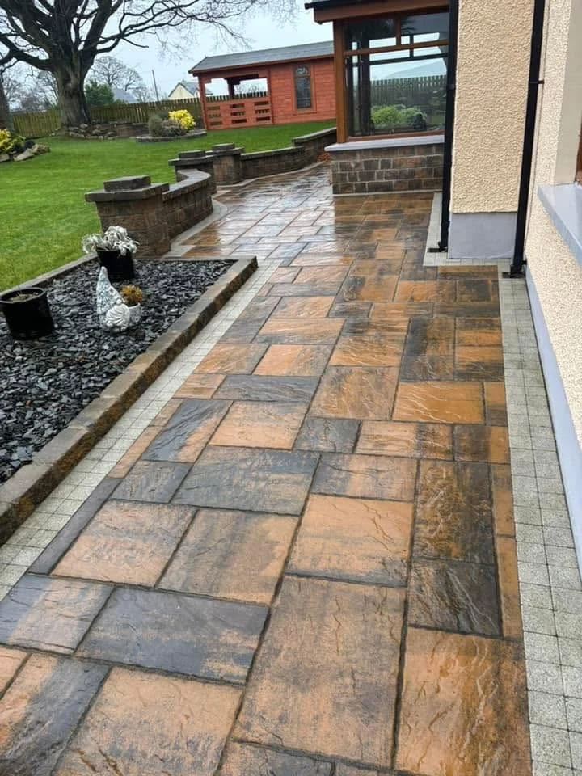

Patios & paving
Create a garden patio or path with paving, borders and details that work together. Explore our geometric designs, stone finishes and decorative features.
Explore this service →
BELFAST & SURROUNDING AREAS
Discuss power washing for patios and outdoor surfaces. We assess the surface and the work needed before agreeing the approach. Serving Belfast and surrounding areas.
LANDSCAPE PAVING NI
Discuss power washing for patios and outdoor surfaces. We assess the surface and the work needed before agreeing the approach.
Send your postcode, photos and approximate dimensions. We will discuss materials, access, the scope of work and the next step.
Discuss your project →BELFAST & SURROUNDING AREAS
Belfast based, covering surrounding areas. Send your postcode so we can discuss your project and confirm availability.
Discuss your project →YOUR NEXT OUTDOOR PROJECT
Landscaping and paving enquiries for Belfast and surrounding areas. Send your postcode and a few details to get started.
Prefer email? ciaransmith1985@outlook.com
Photographs of the work and access are always helpful. You can attach them to your message before sending.
WHAT WE CREATE
Landscaping, paving and outdoor features shaped around the space you have.
Create a garden patio or path with paving, borders and details that work together. Explore our geometric designs, stone finishes and decorative features.
Explore this service →Give your entrance a clear layout with driveway and block paving options suited to your property. Discuss the space, access and the finish you have in mind.
Explore this service →Bring structure and privacy to your outdoor space with fencing and decking as part of your landscaping project.
Explore this service →Create a softer area alongside your paving with artificial grass or turfing, with the lawn shape and edging considered as part of the layout.
Explore this service →Walling, raised beds and cladding can define a change in level and give your outdoor space a coordinated finish.
Explore this service →Keep garden boundaries in shape with hedge trimming. Tell us the approximate size, condition and access so we can discuss the work.
Explore this service →Discuss power washing for patios and outdoor surfaces. We assess the surface and the work needed before agreeing the approach.
Explore this service →Connect paving, lawn areas, fencing and garden features in an outdoor layout shaped around the way you want to use the space.
Explore this service →